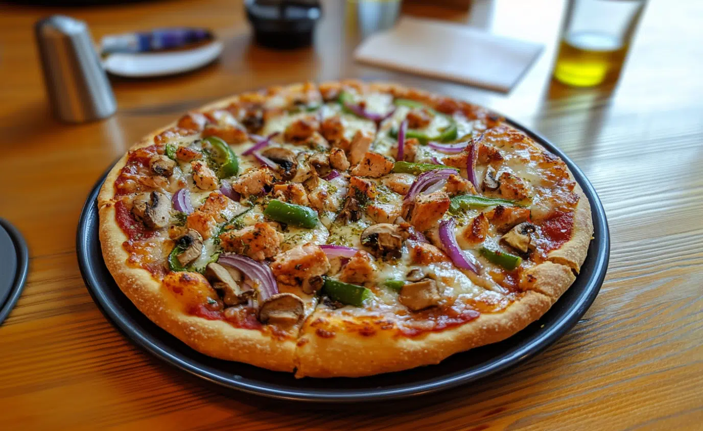

Herbivore Hustle Pizza

This Herbivore Hustle Pizza is a high-protein, satisfying twist on classic pizza. Made with Greek yogurt dough and topped with protein-rich cheeses and your favorite toppings, it’s perfect for fueling workouts while still enjoying incredible flavor.
Ingredients:
- For the Dough:
- 2 cups self-rising flour (or 2 cups all-purpose flour + 1 tsp baking powder + 1/4 tsp salt)
- 1 cup high-protein Greek yogurt
- For the Toppings:
- 1/4 cup pizza sauce
- 1/2 cup cottage cheese and/or shredded mozzarella cheese (vegan or not)
- 2 tbsp ricotta cheese (optional)
- Toppings of choice (mushrooms, spinach, bell peppers, cooked chicken, etc.)
Steps to Make Herbivore Hustle Pizza
- Preheat the oven to 425°F (220°C). If using a pizza stone or baking sheet, place it in the oven to heat up.
- In a large mixing bowl, combine self-rising flour and Greek yogurt. Mix until a dough forms, then knead on a floured surface for 2–3 minutes until smooth.
- Shape the dough into a ball or oval about 1/4 inch thick. For a crispier crust, make it slightly thinner.
- Transfer the dough onto parchment paper to easily move it onto the hot baking sheet or stone.
- Spread the pizza sauce over the dough. Add cottage cheese, mozzarella, ricotta (if using), and your favorite toppings.
- Bake for 12–15 minutes until the crust is golden brown and the cheese is melted and lightly browned.
- Let cool slightly, then slice and serve. Too Goated Gainz unlocked!! 💪🔥